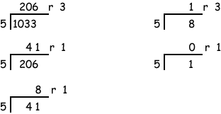

0x409
1033 div 16 = 64 r 9; digit[0] = 9 64 div 16 = 4 r 0; digit[1] = 0 4 div 16 = 0 r 4; digit[2] = 4
The conversion algorithm works to convert a decimal representation of a number to any base. Here is a conversion of 103310 to base 5:

So 103310 = 131135
(the first digit produced is the rightmost). Check the results:
131135 = 1 × 54 + 3 × 53 + 1 × 52 + 1 × 51 + 3 × 50
= 1 × 625 + 3 × 125 + 1 × 25 + 1 × 5 + 3
= 625 + 375 + 25 + 5 + 3
= 103310
Convert 10010 to base 3.